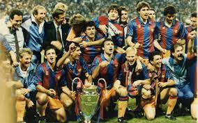
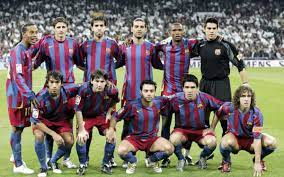
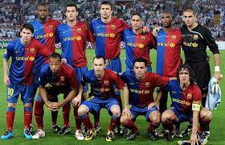
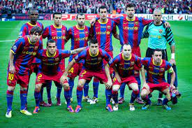
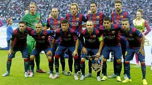

Barcelona 1992
El equipo de fútbol del FC Barcelona en 1992, conocido como el "Dream Team", estuvo dirigido por el entrenador Johan Cruyff y contó con jugadores destacados
como Ronald Koeman, Pep Guardiola, Hristo Stoichkov, Michael Laudrup, entre otros.
Ese año, el Barcelona ganó su primera Copa de Europa al derrotar a la Sampdoria el 20 de mayo de 1992 en Wembley,
gracias a un gol de Ronald Koeman Durante esa temporada, el equipo logró un total de 3 títulos Además de la Copa de Europa,
el equipo ganó cuatro Ligas consecutivas entre 1991 y 1994, una Copa, tres Supercopas de España, una Recopa de Europa y una Supercopa de Europa.
El "Dream Team" del Barcelona de 1992 es recordado por su juego ofensivo y por marcar un hito en la historia del club.

Barcelona 2006
El Fútbol Club Barcelona en 2006 fue un equipo destacado con jugadores emblemáticos y un estilo de juego distintivo. Durante este año, el club logró importantes victorias y títulos.
Entre los jugadores más destacados se encontraban figuras como Ronaldinho, Deco, Samuel Eto'o, Xavi e Iniesta, quienes formaron un equipo formidable.
El palmarés del Barcelona en 2006 incluyó títulos como la Supercopa de España y la Liga de Campeones de la UEFA. El estilo de juego del Barcelona en esa época se caracterizaba por su enfoque en el control del balón,
la creatividad en el ataque y la presión alta para recuperar la posesión, bajo la dirección de entrenador en ese entonces, Frank Rijkaard
El equipo era admirado por su juego vistoso y ofensivo, lo que lo convirtió en uno de los referentes del fútbol europeo en ese periodo.

Barcelona 2009
El Fútbol Club Barcelona en 2009 vivió una temporada histórica bajo la dirección de Josep Guardiola.
El equipo logró un triplete sin precedentes al ganar la Liga, la Copa del Rey y la Liga de Campeones de la UEFA.
Algunos de los jugadores clave en ese exitoso año fueron Lionel Messi, Xavi Hernández, Andrés Iniesta,
Gerard Piqué, Carles Puyol y Thierry Henry. El estilo de juego del Barça, conocido como "tiki-taka", se caracterizaba por una posesión de balón asfixiante, rápidos toques y una presión constante sobre el oponente.
Guardiola, quien no fue jugador del Barça en 2009, sino que fue el entrenador del equipo,
fue una figura fundamental en la implementación de este estilo de juego
y en el desarrollo de muchos de los talentosos jugadores que formaron parte de ese exitoso equipo.

Barcelona 2011
El FC Barcelona en la temporada 2011-2012 contaba con jugadores destacados como Messi, Xavi, Iniesta, Piqué, Puyol, entre otros.
Durante esa temporada, el equipo logró varios títulos, incluyendo la Liga, la Copa del Rey, el Mundial de Clubes, la Supercopa de Europa y la Supercopa de España
En cuanto a su estilo de juego, el Barcelona se caracterizaba por un fútbol ofensivo basado en la posesión del balón, la combinación rápida y el juego posicional
La polivalencia de sus jugadores y la búsqueda del contraataque también eran aspectos destacados de su estilo de juego.
La temporada 2011-2012 fue exitosa para el Barcelona, consolidando su reputación como uno de los mejores equipos de fútbol a nivel mundial

Barcelona 2015
En el año 2015, el FC Barcelona vivió una época dorada con la MSN, formada por Lionel Messi, Luis Suárez y Neymar. Este tridente ofensivo se destacó por su increíble rendimiento, logrando múltiples títulos y récords.
Durante esa temporada, la MSN fue fundamental en la conquista de trofeos como la Liga, la Copa del Rey y la Liga de Campeones.
Juntos, alcanzaron una cifra asombrosa de goles, siendo el tridente más letal del siglo XXI.
Además de la MSN, el Barcelona contaba con otros jugadores destacados que complementaban este trío letal. Jugadores como Andrés Iniesta, Gerard Piqué, Sergio Busquets y otros contribuyeron al éxito del equipo en esa temporada histórica.
La MSN no solo se destacó por su capacidad goleadora, sino también por su entendimiento dentro del campo, creando jugadas memorables que quedaron grabadas en la historia del fútbol.
Su dominio en el terreno de juego los convirtió en uno de los tridentes más recordados y exitosos de todos los tiempos
